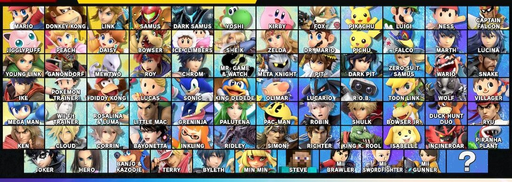

Bij elke nieuwe game in de serie komen er karakters bij, en gaan er meestal karakters weg. In de eerste game - Super Smash Bros. - waren er 12 karakters in totaal. Ondertusssen zijn in er 77 karakters en komen er nog 4 bij.

Super Smash Bros. roster met alle DLC t/m Steve